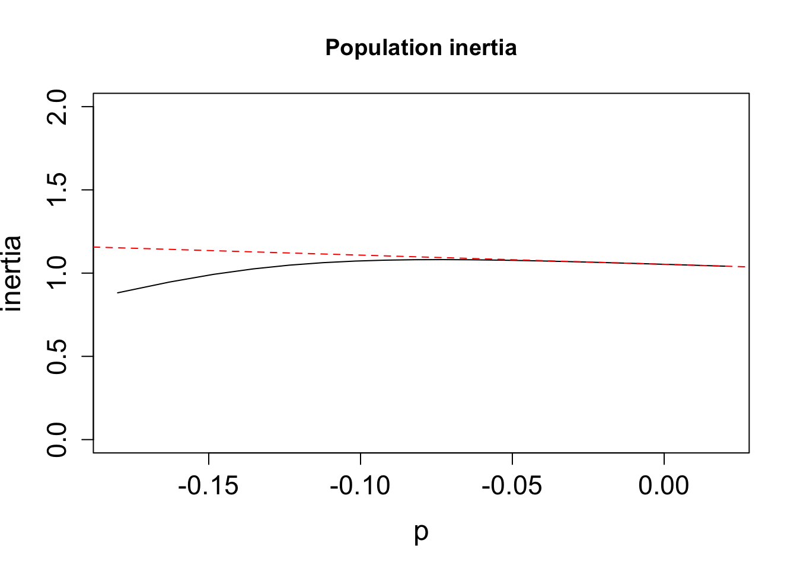

Capítulo 17 Métodos de Simulaciones y estimaciones de intervalos de confianza
Por: Raymond L. Tremblay
El termino biología pudiese ser un sinónimo de variación biológica. No hay dos organismos iguales, ni siquiera gemelos idénticos. La variación biológica es una característica fundamental de la vida y es la base de la evolución. Cuando se considera los individuos, por ejemplos humanos, fácilmente reconocemos variación, en tamaño, color de ojos, suceptibilidad a cáncer o infección y efecto que tiene el ambiente (por ejemplo la dieta o acceso a la educación) entre muchos que impacto la supervivencia o crecimiento y reproducción. Pero desafortunadamente cuando se considera los animales y plantas de una misma especie frecuentemente se obvia la variación en los análisis. Podemos observar variación a múltiples niveles en una misma especie
- Variación sub-individual
- Variación entre individuos
- Variación entre poblaciones
- Variación entre tiempo
Tambien en este capitulo la variación por tamaño de muestra pequeña sobre los parámetros.
17.0.1 Componentes de Variación
17.0.1.1 La variación sub-individual
La variación sub-individual es la variación que se observa en un individuo. Por ejemplo, la variación en el tamaño o la cantidad de hojas, flores, frutos, semillas dentro del mismo individuo. Este tipo de variación es común en plantas y animales y es un componente importante de la variación total pero raramente se considera en los análisis. Carlos Herrera ha demostrado claramente que este componente no solamente es parte de la variación total de las especies pero es importante para entender los procesos ecológicos y evolutivos (Herrera 2009). Esta variación al conocimiento de los autores nunca ha sido incluido en análisis de dinámica poblacional y integrado dentro un PPM.
17.0.1.2 La variación entre individuos
La variación entre individuos es la diferencias que se observa entre individuos de una misma población. Por ejemplo, la variación en el tamaño de los individuos, tamaño de las hojas, cantidad de flores, cantidad de frutos entre individuos de una misma población influye en la probabilidad de sobrevivir, crecer y reproducirse. La variación entre individuos impacta grandemente la supervivencia y reproducción de los individuos. Los trabajos de Harper y otros han demostrado que esa variación es común en las plantas (Harper et al. 1977).
17.0.1.3 La variación entre poblaciones
La variación entre poblaciones es la variación que se observa entre poblaciones de una misma especie. Poblaciones distintas pudiese ser influenciada por la diferencias abióticas y interacciones biótica única a cada población. Esa variación pudiese influenciar la dinámica de cada población y la dinámica de la especie en general.
17.0.1.4 La variación entre tiempo
Este componente de variación incluye la variación típicamente relacionado a la variación abiótica que cambia de un periodo de tiempo a otro. Pero no se debería limitar a considerar solamente la variación abiótica en tiempo ya que la variación biótica también puede cambiar de un periodo de tiempo a otro. Por ejemplo la densidad y/o composición de especies en una comunidad cambia de un periodo de tiempo alrededor de la especie de interés y pudiese influenciar la dinámica estimado por la parámetros de la matriz. Otro ejemplo considera la variación en presencia de herbívoros o patógenos que cambia de un periodo de tiempo a otro y pudiese influenciar la dinámica de la especie de interés.
17.0.2 Variación en tamaño de muestra pequeña
En la gran mayoría de los estudios usando MPP son para evaluar la probabilidad de supervivencia en una especies en peligro de extinción (Do we have the data in COMPADRE to answer this?). La razón principal es que típicamente porque queda muy pocos individuos en la población o pocas poblaciones resulta en tamaño de muestra pequeñas. Como ejemplo consideré que tenemos una especies donde se evalúa los pocos individuos en una población para monitorear en cada etapas de la vida (puediese incluir hasta todos los individuos todavia vivos de esta especie).
Por ejemplo si tuviésemos en esta población solamente un adulto y este adulto sobrevive a la etapa de adulto a adulto entonces la probabilidad de supervivencia es 1.0. Pero si tuviésemos solamente un adulto y este adulto muere entonces la probabilidad de supervivencia es 0.0. En ambos casos la probabilidad de supervivencia es 1.0 o 0.0 respectivamente. Pero tuviésemos 1,000 o 10,000 individuos es muy poco probable que todos se mueren o todos sobreviven. Este es un ejemplo extremo pero ilustra claramente el problema de estimar la probabilidad de supervivencia en una población con un tamaño de muestra puede resultar en estimados sesgados por resultado de tamaño de muestra.
En las próximas secciones vamos a explorar los métodos de simulaciones y estimaciones de intervalos de confianza para abordar la variación biológica y la variación en tamaño de muestra pequeña.
17.1 Introducciones a métodos de simulaciones para estimados de variación
17.1.2 Estocasticidad espacial
En este caso vemos el efecto de la variación espacial en la probabilidad en los estimados.
17.1.2.1 Entrada de datos
El primer paso es definir la diferentes matriz, una por cada periodo de tiempo. En el siguiente script se enseña como entrar los datos para múltiples matrices en un solo objeto. Nota que es una lista de matriz. Los datos provienen de un estudio de la dinámica de una población de Serapia cordigera de 1999 al 2012 evaluando el impacto antropogénico sobre la dinámica de la población. En este caso se emplea solamente 6 matrices de transición de la población de Serapia cordigera en 1999, tres de estas son poblaciones que tienen impacto antropogénico (A1, A2 y A3) y tres poblaciones naturales, sin impacto antropogénico (N1, N2, N3).
Serapia<-list(
A1_1999=matrix(c(
0.745, 0.152, 0.452, 0.564,
0.125, 0.000, 0.000, 0.000,
0.000, 0.321, 0.205, 0.342,
0.200, 0.365, 0.205, 0.185
),
nrow=4, byrow=TRUE,
dimnames=list(c("latente", "plantula", "rosetta", "con flor"),
c("latente", "plantula", "rosetta", "con flor")
)
),
A2_1999=matrix(c(
0.648, 0.203, 0.414, 0.604,
0.188, 0.000, 0.000, 0.000,
0.000, 0.342, 0.198, 0.377,
0.242, 0.264, 0.225, 0.191
),
nrow=4, byrow=TRUE,
dimnames=list(c("latente", "plantula", "rosetta", "con flor"),
c("latente", "plantula", "rosetta", "con flor")
)
),
A3_1999=matrix(c(
0.544, 0.223, 0.364, 0.498,
0.148, 0.000, 0.000, 0.000,
0.000, 0.249, 0.243, 0.287,
0.242, 0.303, 0.210, 0.101
),
nrow=4, byrow=TRUE,
dimnames=list(c("latente", "plantula", "rosetta", "con flor"),
c("latente", "plantula", "rosetta", "con flor")
)
),
N1_1999=matrix(c(
0.287, 0.271, 0.054, 0.107,
0.318, 0.000, 0.000, 0.000,
0.000, 0.438, 0.228, 0.273,
0.111, 0.512, 0.585, 0.542
),
nrow=4, byrow=TRUE,
dimnames=list(c("latente", "plantula", "rosetta", "con flor"),
c("latente", "plantula", "rosetta", "con flor")
)
),
N2_1999=matrix(c(
0.299, 0.253, 0.066, 0.182,
0.324, 0.000, 0.000, 0.000,
0.000, 0.461, 0.222, 0.264,
0.339, 0.568, 0.554, 0.547
),
nrow=4, byrow=TRUE,
dimnames=list(c("latente", "plantula", "rosetta", "con flor"),
c("latente", "plantula", "rosetta", "con flor")
)
),
N3_1999=matrix(c(
0.245, 0.156, 0.052, 0.147,
0.325, 0.000, 0.000, 0.000,
0.000, 0.422, 0.305, 0.252,
0.210, 0.465, 0.498, 0.485
),
nrow=4, byrow=TRUE,
dimnames=list(c("latente", "plantula", "rosetta", "con flor"),
c("latente", "plantula", "rosetta", "con flor")
)
)
)
Serapia## $A1_1999
## latente plantula rosetta con flor
## latente 0.745 0.152 0.452 0.564
## plantula 0.125 0.000 0.000 0.000
## rosetta 0.000 0.321 0.205 0.342
## con flor 0.200 0.365 0.205 0.185
##
## $A2_1999
## latente plantula rosetta con flor
## latente 0.648 0.203 0.414 0.604
## plantula 0.188 0.000 0.000 0.000
## rosetta 0.000 0.342 0.198 0.377
## con flor 0.242 0.264 0.225 0.191
##
## $A3_1999
## latente plantula rosetta con flor
## latente 0.544 0.223 0.364 0.498
## plantula 0.148 0.000 0.000 0.000
## rosetta 0.000 0.249 0.243 0.287
## con flor 0.242 0.303 0.210 0.101
##
## $N1_1999
## latente plantula rosetta con flor
## latente 0.287 0.271 0.054 0.107
## plantula 0.318 0.000 0.000 0.000
## rosetta 0.000 0.438 0.228 0.273
## con flor 0.111 0.512 0.585 0.542
##
## $N2_1999
## latente plantula rosetta con flor
## latente 0.299 0.253 0.066 0.182
## plantula 0.324 0.000 0.000 0.000
## rosetta 0.000 0.461 0.222 0.264
## con flor 0.339 0.568 0.554 0.547
##
## $N3_1999
## latente plantula rosetta con flor
## latente 0.245 0.156 0.052 0.147
## plantula 0.325 0.000 0.000 0.000
## rosetta 0.000 0.422 0.305 0.252
## con flor 0.210 0.465 0.498 0.48517.1.2.2 Simulaciones con igual probabilidad de selección
Si uno asume que hay igual cantidad de poblaciones afectada de forma antropogénicas y naturales entonces se puede hacer un análisis de la variación espacial en la probabilidad de supervivencia. Se puede simular el crecimiento con igual probabilidad de selección de las matrices de transición. en otra palabra cada matriz sera seleccionado al azar 1/6 de las veces. Este supuesto es razonable si uno asume que hay igual cantidad de poblaciones afectada de forma antropogénicas y naturales. El objetivo es ver la variación en la probabilidad de supervivencia en la población de Serapia cordigera en 1999 o mejor cual seria el tamaño de la poblacional típica de la especies si la especie se comporta como la siguientes matrices (Pellegrino and Bellusci 2014).
La función stoch.projection del paquete popbio permite hacer simulaciones de la dinámica de una población y da una lista de la cantidad de individuos esperado por cada etapa de la vida. Comenzamos por definir el tamaño de la población inicial por etapa de la vida, n, el nombre de las etapas de la vida y luego usamos la función stoch.projection para hacer las simulaciones.
n <- c(2, 0, 4, 99) # corresponde a los datos de la especies en la publicación del año 2000
names(n) <- c("latente", "plantula", "rosetta", "con flor")
Serapia.eq <- stoch.projection(Serapia, n, nreps=1000) # simulación con igual probabilidad de selección
head(Serapia.eq) # vemos las primeras 6 simulaciones de tamaño de muestra## latente plantula rosetta con flor
## [1,] 6.3726930 0.7251351 1.4122955 2.2587073
## [2,] 0.4423266 0.1989553 0.6849809 1.3092372
## [3,] 0.7944671 0.3268431 1.2629352 2.4180959
## [4,] 1.5076701 1.1098084 0.9456168 3.1433555
## [5,] 1.2659898 0.4734350 1.4096363 3.0731615
## [6,] 1.5171817 0.2394384 0.4028042 0.646003817.1.3 Cual es la distribución de numero de individuos esperado.
para observar cuantos individuos hubiese en el futuro de la población de Serapia cordigera en 1999 si la especie se comporta como las matrices de transición.
Serapia.eq=clean_names(as.data.frame(Serapia.eq))
Serapia.eq %>%
gather(key="etapa", value="individuos") %>%
ggplot(aes(x=individuos))+
geom_histogram(bins=30, fill="blue", color="black")+
facet_wrap(~etapa, scales="free")+
theme_minimal()+
labs(title="Distribución de número de individuos esperado de *Serapia cordigera*",
x="Número de individuos", y="Frecuencia")+
theme(title = element_markdown())
Serapia_eq_T=Serapia.eq %>%
mutate(total=rowSums(across(where(is.numeric))))
ggplot(Serapia_eq_T,aes(x=total))+
geom_histogram(bins=30, fill="blue", color="black")+
theme_minimal()+
labs(title="Distribución de total de individuos esperado de *Serapia cordigera*",
x="Número Total de individuos por simulación", y="Frecuencia")+
theme(title = element_markdown())
17.1.4 Simulaciones con diferente probabilidad de selección
La probabilidad de selección de las matrices de transición no tiene que ser igual. En el siguiente script se muestra como hacer simulaciones con diferente probabilidad de selección de las matrices de transición. En este caso se asume que hay las 3 poblaciones afectada de forma antropogénicas son más comun en la especies y las 3 poblaciones naturales son poblaciones raras. En la sección del script vemos que ahora las poblaciones afectada de forma antropogénicas son seleccionadas con una probabilidad de 0.85 y las poblaciones naturales con una probabilidad de 0.15. En otra palabra las poblaciones naturales son muy raras, y la especies es ta dominada por sitio donde la especies es afectada de forma antropogénicas. Importante este es una simulación y no refleja la realidad de la especies ni la publicación.
n <- c(2, 0, 4, 99) # población inicial por etapa
names(n) <- c("latente", "plantula", "rosetta", "con flor")
Serapia.uneq <- stoch.projection(Serapia, n, nreps=1000, prob=c(.3, .3, .25, .05, .05, .05)) # simulación con igual probabilidad de selección
head(Serapia.uneq) # vemos las primeras 6 simulaciones de tamaño de muestra## latente plantula rosetta con flor
## [1,] 11.209484 0.6610101 5.390208 5.295794
## [2,] 12.770066 2.3388487 3.200172 5.210334
## [3,] 6.954414 6.9520939 4.321883 11.559468
## [4,] 22.026908 2.5130197 4.870993 7.808373
## [5,] 18.510491 2.1804024 3.521951 6.132888
## [6,] 24.879718 4.2529536 6.206841 11.11923117.1.5 Comparar la distribución de cantidad de individuos esperado por simulaciones
Ahora vamos a solapar las dos distribuciones para ver si hay una diferencia en la distribución de tamaño de muestra entre las dos simulaciones. Los resultados de la simulaciones siguiere que las poblaciones afectada de forma antropogénicas (rojo) tienen una mayor cantidad de individuos en el futuro que las poblaciones naturales (azul).
Serapia.uneq=clean_names(as.data.frame(Serapia.uneq))
Serapia.uneq_T=Serapia.uneq %>%
mutate(total=rowSums(across(where(is.numeric))))
ggplot(Serapia.uneq_T, aes(total))+
geom_histogram( bins=30, fill="red", color="black", alpha=.5)+
geom_histogram(data=Serapia_eq_T, aes(x=total), bins=30, fill="blue", color="black", alpha=.5)+
theme_minimal()+
labs(title="Distribución de total de individuos esperado de *Serapia cordigera*",
x="Número Total de individuos por simulación", y="Frecuencia")+
theme(title = element_markdown())
17.1.5.1 Simlación de crecimiento poblaciónal de Serapia cordigera
En el siguiente script podemos evaluar el crecimiento poblacional y su variación en el espacio.
Nota aquí se calcula el log(crecimiento poblacional estocástica) de la especies de Serapia cordigera por aproximación y simulaciones siguiente la formula de Tuljapukar (Tuljapurkar 2013). Se puede ver que la especies tiene un crecimiento poblacional negativo en la mayoría de las simulaciones. Esto sugiere que la especies esta en declive. Pero también se puede ver que hay una variación en el crecimiento poblacional de la especies. El script incluye un parámetro para indicar por cuanto tiempo queremos que la simulación ocurre, maxt=, en esta caso se simula por 50 periodos de tiempo, si no se añade nada la simulación dura por 50000 periodos de tiempo.
Cuando se usa el log de crecimiento poblacional estocástica se calcula \[r\], ese valor es \(r=ln(\lambda)\). \(r\) se interpretación de forma diferentes que los valores de lambda,
- \(r\) = log(crecimiento poblacional estocástica) > 0 la población crece
- \(r\) = log(crecimiento poblacional estocástica) < 0 la población decrece
- \(r\) = log(crecimiento poblacional estocástica) = 0 la población no cambia
El crecimiento estocástico de las poblaciones de Serapia cordigera en 1999 es negativo, sugiere que la especies esta en declive. Pero también se puede ver que hay una variación en el crecimiento poblacional de la especies. Se usa la función stoch.grwoth.rate
## Calculating stochastic growth at time 1## $approx
## [1] -0.06760619
##
## $sim
## [1] -0.05711104
##
## $sim.CI
## [1] -0.08862698 -0.02559511SGR_uneq=stoch.growth.rate(Serapia, maxt=50, prob=c(.3, .3, .25, .05, .05, .05), verbose=FALSE) # matrices seleccionado con diferente probabilidades
SGR_uneq## $approx
## [1] -0.02988694
##
## $sim
## [1] -0.02644305
##
## $sim.CI
## [1] -0.0536932466 0.0008071467Nota que los intervalos de confianza del crecimiento estocástico no solapa el zero para simulaciones con igual probabilidades, pero con probabilidades diferentes solapa el zero. Por consecuencia hay evidencia que en este caso, que las poblaciones si se comportará con igual frecuencia son afectada de forma antropogénicas o naturales, y la especies esta en declive. Al contrario, si la mayoría de las poblaciones son afectada de forma antropogénicas, la especies no esta en declive.
Para convertir el log(crecimiento poblacional estocástica) a lambda se usa la siguiente formula \(e^r\)
17.1.5.2 Conversión de \(r\) a \(\lambda\)
Lambda Igual de probabilidades
## [1] 0.9444892## [1] 0.9151869## [1] 0.9747297Lambda Diferente de probabilidades
## [1] 0.9739035## [1] 0.9477228## [1] 1.000807library(popbio)
# El primer paso es definir la diferentes matriz, una por cada periodo de tiempo
n <- c(4264, 3,30,16,25,5)
names(n) <- c("seed", "seedlings", "tiny", "small", "medium" , "large")
## use equal and unequal probabilities for matrix selection
x.eq <- stoch.projection(hudsonia, n, nreps=1000)
x.uneq <- stoch.projection(hudsonia, n, nreps=1000, prob=c(.2,.2,.2,.4))
hist(apply(x.eq, 1, sum), xlim=c(0,5000), ylim=c(0,200), col="green",
breaks=seq(0,5000, 100), xlab="Final population size at t=50", main='')
par(new=TRUE)
## use transparency for overlapping distributions - may not work on all systems
hist(apply(x.uneq, 1, sum), xlim=c(0,5000), ylim=c(0,200), col=rgb(0, 0, 1, 0.2),
xaxt='n', yaxt='n', ylab='', xlab='', breaks=seq(0,10000, 100), main='')
legend(2500,200, c("equal", "unequal"),fill=c("green", rgb(0, 0, 1, 0.2)))
title(paste("Projection of stochastic growth for Hudsonia
using equal and unequal probabilities"), cex.main=1)
## initial pop size
sum(n)## [1] 4343
17.1.6 Estocasticidad temporal
El objetivo de evaluar la variación en tiempo es para determinar si los cambios temporales son importante en predecir el cambio poblacional.
Seguimos con los datos Serapias cordigera, pero ahora evaluar cual es el efecto de la variación en los parámetros de la matriz usando múltiple censos. Vemos el efecto de una esas población, por impacto antropogenico, A1 en los años de 1999, 2000, 2001, 2002, 2003, 2004, 2005, 2006, 2007, 2008, 2009, 2010, 2011 y 2012.
El primer paso en entrar los datos en una lista de matrices de transición.
Serapia_tiempo<-list(
A1_1999=matrix(c(
0.745, 0.152, 0.452, 0.564,
0.125, 0.000, 0.000, 0.000,
0.000, 0.321, 0.205, 0.342,
0.200, 0.365, 0.205, 0.185
),
nrow=4, byrow=TRUE,
dimnames=list(c("latente", "plantula", "rosetta", "con flor"),
c("latente", "plantula", "rosetta", "con flor")
)
),
A1_2000=matrix(c(
0.578, 0.222, 0.394, 0.394,
0.188 ,0.000, 0.000, 0.000,
0.000 ,0.322, 0.254, 0.357,
0.244 ,0.314, 0.125, 0.302
),
nrow=4, byrow=TRUE,
dimnames=list(c("latente", "plantula", "rosetta", "con flor"),
c("latente", "plantula", "rosetta", "con flor")
)
),
A1_2001=matrix(c(
0.668, 0.122, 0.294, 0.401,
0.128, 0.000 ,0.000, 0.000,
0.000, 0.302 ,0.453, 0.366,
0.214, 0.364, 0.185, 0.207
),
nrow=4, byrow=TRUE,
dimnames=list(c("latente", "plantula", "rosetta", "con flor"),
c("latente", "plantula", "rosetta", "con flor")
)
),
A1_2002=matrix(c(
0.645, 0.222, 0.682, 0.504,
0.177, 0.000, 0.000, 0.000,
0.000, 0.421, 0.305, 0.382,
0.102, 0.355, 0.208, 0.208
),
nrow=4, byrow=TRUE,
dimnames=list(c("latente", "plantula", "rosetta", "con flor"),
c("latente", "plantula", "rosetta", "con flor")
)
),
A1_2003=matrix(c(
0.545, 0.113, 0.424, 0.424,
0.247, 0.000, 0.000, 0.000,
0.000, 0.166, 0.233, 0.277,
0.192, 0.253, 0.209, 0.212
),
nrow=4, byrow=TRUE,
dimnames=list(c("latente", "plantula", "rosetta", "con flor"),
c("latente", "plantula", "rosetta", "con flor")
)
),
A1_2004=matrix(c(
0.548, 0.191, 0.402, 0.527,
0.327, 0.000, 0.000, 0.000,
0.000, 0.338, 0.127, 0.394,
0.211, 0.262, 0.296, 0.142
),
nrow=4, byrow=TRUE,
dimnames=list(c("latente", "plantula", "rosetta", "con flor"),
c("latente", "plantula", "rosetta", "con flor")
)
),
A1_2005=matrix(c(
0.602, 0.153, 0.486, 0.562,
0.224, 0.000, 0.000, 0.000,
0.000, 0.491, 0.324, 0.304,
0.139, 0.268, 0.294, 0.277
),
nrow=4, byrow=TRUE,
dimnames=list(c("latente", "plantula", "rosetta", "con flor"),
c("latente", "plantula", "rosetta", "con flor")
)
),
A1_2006=matrix(c(
0.487, 0.471, 0.425, 0.607,
0.318, 0.000, 0.000, 0.000,
0.000, 0.438, 0.328, 0.373,
0.211, 0.212, 0.285, 0.142
),
nrow=4, byrow=TRUE,
dimnames=list(c("latente", "plantula", "rosetta", "con flor"),
c("latente", "plantula", "rosetta", "con flor")
)
),
A1_2007=matrix(c(
0.544, 0.423, 0.374, 0.578,
0.348, 0.000, 0.000, 0.000,
0.000, 0.441, 0.248, 0.288,
0.145, 0.203, 0.311, 0.201
),
nrow=4, byrow=TRUE,
dimnames=list(c("latente", "plantula", "rosetta", "con flor"),
c("latente", "plantula", "rosetta", "con flor")
)
),
A1_2008=matrix(c(
0.568, 0.325, 0.294, 0.607,
0.227, 0.000, 0.000, 0.000,
0.000, 0.402, 0.553, 0.256,
0.194, 0.364, 0.275, 0.217
),
nrow=4, byrow=TRUE,
dimnames=list(c("latente", "plantula", "rosetta", "con flor"),
c("latente", "plantula", "rosetta", "con flor")
)
),
A1_2009=matrix(c(
0.545, 0.356, 0.472, 0.398,
0.225, 0.000, 0.000, 0.000,
0.000, 0.322, 0.304, 0.452,
0.110, 0.225, 0.298, 0.185
),
nrow=4, byrow=TRUE,
dimnames=list(c("latente", "plantula", "rosetta", "con flor"),
c("latente", "plantula", "rosetta", "con flor")
)
),
A1_2010=matrix(c(
0.399, 0.352, 0.486, 0.580,
0.424, 0.000, 0.000, 0.000,
0.000, 0.561, 0.312, 0.264,
0.239, 0.168, 0.354, 0.247
),
nrow=4, byrow=TRUE,
dimnames=list(c("latente", "plantula", "rosetta", "con flor"),
c("latente", "plantula", "rosetta", "con flor")
)
),
A1_2011=matrix(c(
0.497, 0.352, 0.465, 0.622,
0.324, 0.000, 0.000, 0.000,
0.000, 0.361, 0.321, 0.264,
0.139, 0.368, 0.367, 0.177
),
nrow=4, byrow=TRUE,
dimnames=list(c("latente", "plantula", "rosetta", "con flor"),
c("latente", "plantula", "rosetta", "con flor")
)
)
)
Serapia_tiempo## $A1_1999
## latente plantula rosetta con flor
## latente 0.745 0.152 0.452 0.564
## plantula 0.125 0.000 0.000 0.000
## rosetta 0.000 0.321 0.205 0.342
## con flor 0.200 0.365 0.205 0.185
##
## $A1_2000
## latente plantula rosetta con flor
## latente 0.578 0.222 0.394 0.394
## plantula 0.188 0.000 0.000 0.000
## rosetta 0.000 0.322 0.254 0.357
## con flor 0.244 0.314 0.125 0.302
##
## $A1_2001
## latente plantula rosetta con flor
## latente 0.668 0.122 0.294 0.401
## plantula 0.128 0.000 0.000 0.000
## rosetta 0.000 0.302 0.453 0.366
## con flor 0.214 0.364 0.185 0.207
##
## $A1_2002
## latente plantula rosetta con flor
## latente 0.645 0.222 0.682 0.504
## plantula 0.177 0.000 0.000 0.000
## rosetta 0.000 0.421 0.305 0.382
## con flor 0.102 0.355 0.208 0.208
##
## $A1_2003
## latente plantula rosetta con flor
## latente 0.545 0.113 0.424 0.424
## plantula 0.247 0.000 0.000 0.000
## rosetta 0.000 0.166 0.233 0.277
## con flor 0.192 0.253 0.209 0.212
##
## $A1_2004
## latente plantula rosetta con flor
## latente 0.548 0.191 0.402 0.527
## plantula 0.327 0.000 0.000 0.000
## rosetta 0.000 0.338 0.127 0.394
## con flor 0.211 0.262 0.296 0.142
##
## $A1_2005
## latente plantula rosetta con flor
## latente 0.602 0.153 0.486 0.562
## plantula 0.224 0.000 0.000 0.000
## rosetta 0.000 0.491 0.324 0.304
## con flor 0.139 0.268 0.294 0.277
##
## $A1_2006
## latente plantula rosetta con flor
## latente 0.487 0.471 0.425 0.607
## plantula 0.318 0.000 0.000 0.000
## rosetta 0.000 0.438 0.328 0.373
## con flor 0.211 0.212 0.285 0.142
##
## $A1_2007
## latente plantula rosetta con flor
## latente 0.544 0.423 0.374 0.578
## plantula 0.348 0.000 0.000 0.000
## rosetta 0.000 0.441 0.248 0.288
## con flor 0.145 0.203 0.311 0.201
##
## $A1_2008
## latente plantula rosetta con flor
## latente 0.568 0.325 0.294 0.607
## plantula 0.227 0.000 0.000 0.000
## rosetta 0.000 0.402 0.553 0.256
## con flor 0.194 0.364 0.275 0.217
##
## $A1_2009
## latente plantula rosetta con flor
## latente 0.545 0.356 0.472 0.398
## plantula 0.225 0.000 0.000 0.000
## rosetta 0.000 0.322 0.304 0.452
## con flor 0.110 0.225 0.298 0.185
##
## $A1_2010
## latente plantula rosetta con flor
## latente 0.399 0.352 0.486 0.580
## plantula 0.424 0.000 0.000 0.000
## rosetta 0.000 0.561 0.312 0.264
## con flor 0.239 0.168 0.354 0.247
##
## $A1_2011
## latente plantula rosetta con flor
## latente 0.497 0.352 0.465 0.622
## plantula 0.324 0.000 0.000 0.000
## rosetta 0.000 0.361 0.321 0.264
## con flor 0.139 0.368 0.367 0.17717.1.6.1 Simulaciones con igual probabilidad de selección
n <- c(2, 0, 4, 99) # población inicial por etapa
names(n) <- c("latente", "plantula", "rosetta", "con flor")
Serapia_tiempo_eq <- stoch.projection(Serapia_tiempo, n, nreps=1000) # simulación con igual probabilidad de selección
head(Serapia_tiempo_eq) # vemos las primeras 6 simulaciones de tamaño de muestra## latente plantula rosetta con flor
## [1,] 76.77330 11.825242 23.74136 22.76998
## [2,] 78.37029 24.171004 30.07388 32.70448
## [3,] 42.86089 14.233284 14.18861 20.30741
## [4,] 72.99422 9.267407 31.00421 34.17744
## [5,] 57.92467 19.005376 19.28551 21.90906
## [6,] 57.97046 9.102361 19.41849 18.18221SGR_Temp_eq=stoch.growth.rate(Serapia_tiempo, maxt=50) # matrices seleccionado con igual probabilidad## Calculating stochastic growth at time 1## $approx
## [1] 0.002712947
##
## $sim
## [1] 0.009300112
##
## $sim.CI
## [1] -0.01920762 0.03780784## [1] 1.009343## [1] 0.9809757## [1] 1.038532Comparar la variación temporal en el crecimiento poblacional de la especies de Serapia cordigera en 1999 a 2012 con la variación espacial.
Lo que se observa es que la variación temporal y la variación espacial es más o menos igual (el rango de variación), pero que hay menos variación temporal que espacial.
Tabla_resultado=tribble(
~tipo, ~valor, ~CI_inf, ~CI_sup,~diff_ci,
"Espacial", exp(SGR_eq$sim), exp(SGR_eq$sim.CI[1]), exp(SGR_eq$sim.CI[2]), exp(SGR_eq$sim.CI[2])-exp(SGR_eq$sim.CI[1]),
"Temporal", exp(SGR_Temp_eq$sim), exp(SGR_Temp_eq$sim.CI[1]), exp(SGR_Temp_eq$sim.CI[2]), exp(SGR_Temp_eq$sim.CI[2])-exp(SGR_Temp_eq$sim.CI[1])
)
Tabla_resultado## # A tibble: 2 × 5
## tipo valor CI_inf CI_sup diff_ci
## <chr> <dbl> <dbl> <dbl> <dbl>
## 1 Espacial 0.944 0.915 0.975 0.0595
## 2 Temporal 1.01 0.981 1.04 0.0576Observación de la variación temporal y espacial en el crecimiento poblacional de la especies de Serapia cordigera en un gráfico.
Se nota que el crecimiento poblacional intrínsico de la especies de Serapia cordigera es negativo en la mayoría de las simulaciones cuando se evalúa múltiple poblaciones, pero la población A1 en general tiene un crecimiento positivo o es estable cuando se evalúa tomando en cuanta la variación temporal .
ggplot(Tabla_resultado, aes(x=tipo, y=valor))+
geom_point(stat="identity", fill="blue")+
geom_errorbar(aes(ymin=CI_inf, ymax=CI_sup), width=.2)+
theme_minimal()+
labs(title="Comparación de crecimiento poblacional de *Serapia cordigera*",
x="Tipo de variación", y="Crecimiento poblacional")+
theme(title = element_markdown())
17.1.7 Estocasticidad demografica
En esta seccion veoms el efecto del tamaño de muestra sobre los parametros de la matriz de transición.
Este método usa un acercamiento Bayesiano y una distribución de probabilidad para estimar los parámetros de la matriz de transición Dirichlet. Vemos a que se refiere un análisis bayesiano y la función Dirichlet. El lo que corresponde al presenta analisis es que en los analisis Bayesiano, incluimos una previa al analisis, en otra palabra, se usa información previa al analisis para calular los parametros (posteriores). En nuestro caso haremos una previa con poco peso, en otra palabra, no influirá mucho (o casi nada) en los resultados.
17.2 Ventaja de usar simulaciones
La primera ventaja de usar métodos de análisis por simulaciones es calcula un intervalo de confianza. Si los intervalos de confianza de lambda solapa el uno (1) (si solapa el 0 para log(lambda)) entonces no hay evidencia de que el crecimiento poblacional es diferente de uno.
La segunda ventaja de usar simulaciones es que hay que recordar que los análisis están basado en datos limitados y que la si hubiese más o menos datos para estimar los elementos de la matriz la parámetros de la matriz sería diferente. Entonces hay un componente de incertidumbre en los estimados de los parámetros de la matriz que no es considerado en los análisis tradicionales.
Esta incertidumbre se separa entre los efectos de tamaños de muestra, variación espacial y temporal.